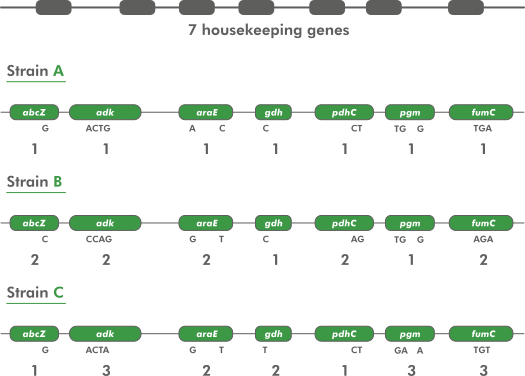
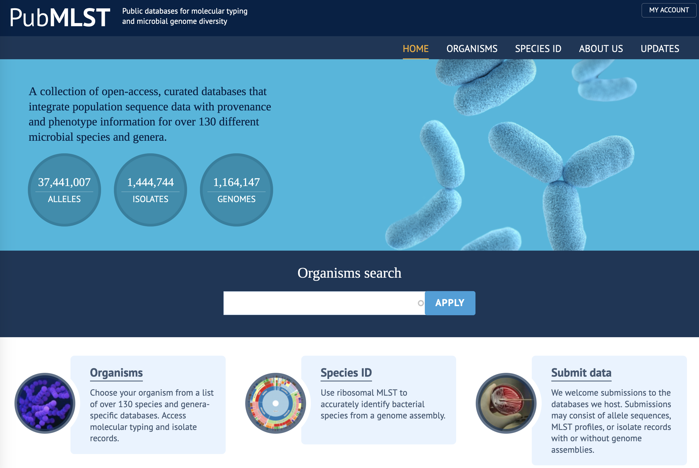
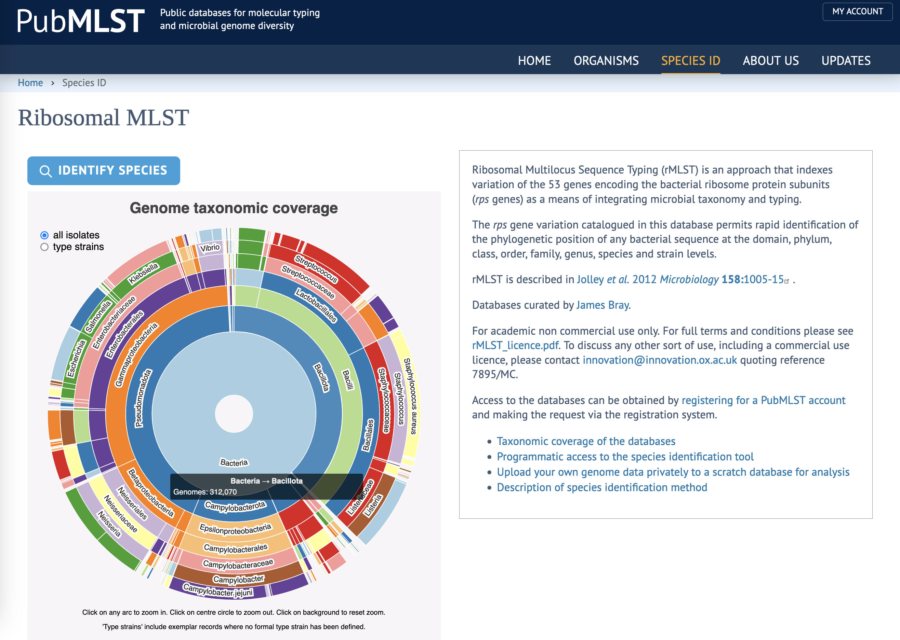
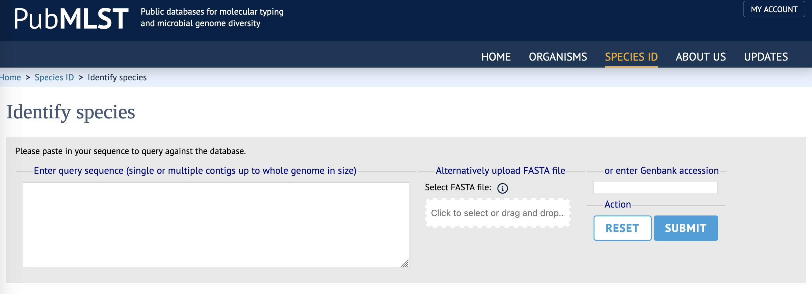

4 Multi-Locus Sequence Typing (MLST)
4.1 MLST identification of your isolate
In this part of the workshop, you will use a public Multi-Locus Sequence Typing (MLST) database and resources to help identify your isolate.
Please ensure that you have downloaded the genome file for your isolate (isolate_genome.fasta) to a suitable location on your computer.
Multi-Locus Sequence Typing (MLST) is a widely-used method for bacterial identification. It is typically more precise and has more resolving power than 16S sequence analysis, but less precise than whole-genome sequence analysis (Maiden et al. (2013)).
MLST works by defining marker sequences for a taxon. These are typically well-conserved (“housekeeping”) genes which very relatively little between organisms in the taxon, but enough to allow discrimination between them. The number of markers varies, but is usually somewhere around seven.
Each marker sequence has many variants (different sequences) within the taxon, and these are known as alleles. Each marker allele is given a unique number (starting at 1 and counting upwards) - its allele number. A single organism’s sequence type (ST) is determined by the list of allele numbers that it contains. Organisms with the same sequence type are considered to be part of the same group.

4.2 pubMLST
- Go to the pubMLST website

- Click on
Species IDto open the bacterial species identifier

- Click on
Identify Speciesto start the identification process

- Upload your
isolate_genome.fastafile to the server either by clicking onClick to select or drag and dropand using the dialogue box to find your file, or by dragging the file onto theSelect FASTA filefield.- Alternatively, copy and paste the file contents - the entire genome sequence - into the
Enter query sequencebox.
- Alternatively, copy and paste the file contents - the entire genome sequence - into the
- Click on the
Submitbutton and wait for the results
- What is the predicted taxon of your isolate’s genome? What level of confidence does the pubMLST tool assign to this prediction (
Supportcolumn)? - How many marker genes in your isolate had an exact match in the database? Do you think this is a sufficient number for accurate taxonomic placement? Why do you think that?
- How many different species in the database had an exact match to markers in your isolate’s genome?
- Which species in the database had an exact match to markers in your isolate’s genome? What effect does this have on your confidence in your classification?
- What is your current opinion about the identity of your isolate? Have you revised your opinion from 16S analysis due to the MLST analysis? How confident are you in your current identification?
Now you have further supporting information about the identity of your isolate, you should continue the classification of your isolate by using whole-genome comparison methods to try to pin down a more definitive taxonomic placement Click on the link to Whole-genome Comparison (here, or below), to get started.